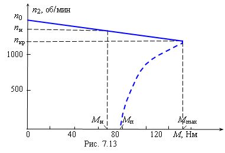

|
Упражнение 7.1
Известны номинальные данные трёхфазного асинхронного двигателя с короткозамкнутым ротором: мощность на валу Р2н = 10 кВт; линейное напряжение 380 В при частоте 50 Гц; число пар полюсов 2р = 2; частота вращения ротора n2н = 1450 об/мин; КПД ηн = 87,5%; коэффициент мощности cosφн = 0,88; кратность пускового тока α = Iп/Iн = 5; кратность пускового момента β = Mп/Mн = 1,2; кратность максимального момента λ = Mmax/Mн = 2. Определить мощность и ток, потребляемые двигателем из сети при номинальной нагрузке; пусковой ток; как изменится пусковой момент двигателя при снижении напряжения на его зажимах на 10% и возможен ли пуск двигателя с номинальной нагрузкой при изменившихся условиях. Построить естественную механическую характеристику n2 = ƒ(M) при изменении скольжения в пределах 0 ≤ S ≤ 1. Решение. Таблица 7.1
6. По данным табл. 7.1 строим механическую характеристику двигателя n2 = ƒ(M) (рис. 7.13), выбрав соответствующие масштабы по осям. В связи с тем, что значения моментов при скольжениях от Sкр до S = 1 не вычисляются, механическая характеристика от Mп до Mmax изображена пунктирной линией (см. рис. 7.13). 
|
||||||||||||||||||||||||||||||||||||||||